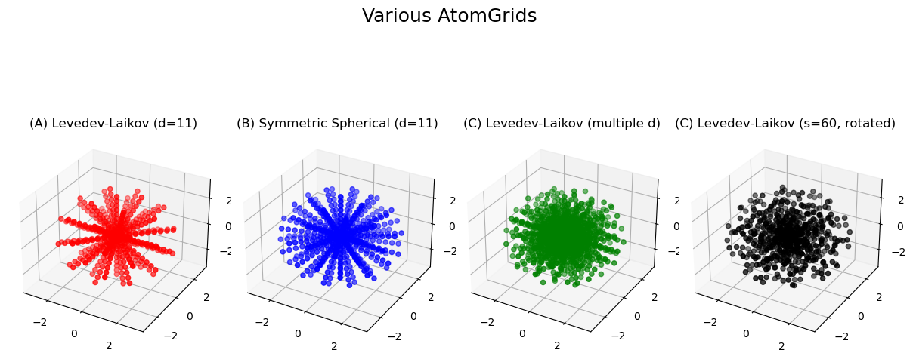
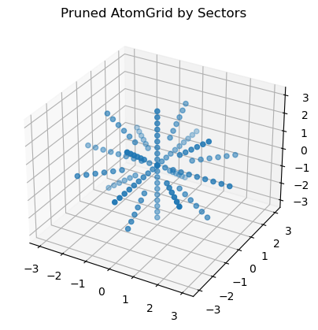
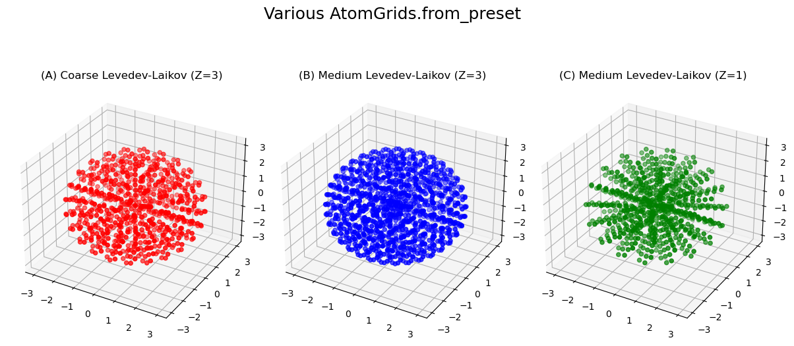
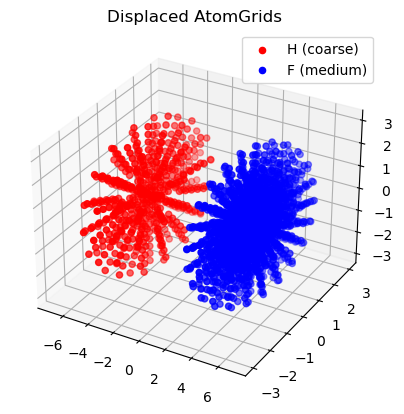

Construct Atomic Grid#
Atomic gris are useful for evaluation, integration, interpolation, and differentiation in three-dimensional (3D) atomic domains. The are constructed by combining a radial and angular grid. The radial grid \(\{(r_i, w_i)\}_{i=1}^{N}\) covers the radius coordinate of spherical coordinates, and associted with each radius, there is an angular (Lebedev or Symmetric spherical t-design) grid \(\{(\theta^i_j, \phi^i_j, w_j^i)\}_{j=1}^{M_i}\) covering the angle coordinate of spherical coordinates.
This notebook will go over different ways of constructing an AtomGrid, which provides flexibility in the choice of radial and angular components.
Atomic Grid AtomGrid#
AtomGrid builds an atomic grid instance given a radial grid and an array of angular grid degrees (or sizes) used for constructing angular grids at each radial grid point. So, in the first step a radial grid needs to be constructed. For more details on the radial and angular grids, see radial grids and angular grids.
import numpy as np
from grid import UniformInteger, LinearInfiniteRTransform
# Construct a radial grid with 10 points spanning from r=1e-4 to r=3.0
oned = UniformInteger(npoints=10)
rgrid = LinearInfiniteRTransform(1e-4, 3.0).transform_1d_grid(oned)
print(f"Radial grid size : {rgrid.size}")
print(f"Radial grid r_min: {np.min(rgrid.points):.5f}")
print(f"Radial grid r_max: {np.max(rgrid.points):.5f}")
Radial grid size : 10
Radial grid r_min: 0.00010
Radial grid r_max: 3.00000
Having a radial grid, the angular grid can be specified by the angular grid degrees (or sizes). If only one value is provided (i.e., list/array of length one), the same angular grid is used for all radial grid points. Otherwise, the degrees (or sizes) list/array should have the same length as the number of radial grid points. Additionally (A, B, C, and D refer to the atomic grids constructed in the following code block):
By default the Levedev-Laikov angular grids are used (A, C, and D), unless
method="spherical"which employs the Symmetric spherical t-design angular grids (B).If the provided
degreesare not available, the closest availabledegreesare used (B).To randomly rotate the angular grids at each radial grid point, the
rotateargument can be used to provide a seed for random rotation matrix (C).
from grid import AtomGrid
# (A) AtomGrid from a radial grid and an angular degree (Levedev-Laikov)
atgrid_ll = AtomGrid(rgrid, degrees=[11])
print(f"AtomGrid A size : {atgrid_ll.size}")
print(f"AtomGrid A radial size : {atgrid_ll.rgrid.size}")
print(f"AtomGrid A angular degree: {atgrid_ll.degrees} (Levedev-Laikov)")
print(f"AtomGrid A center : {atgrid_ll.center}\n")
# (B) AtomGrid from a radial grid and an angular degree (symmetric spherical t-design)
atgrid_ss = AtomGrid(rgrid, degrees=[10], method="spherical")
print(f"AtomGrid B size : {atgrid_ss.size}")
print(f"AtomGrid B radial size : {atgrid_ss.rgrid.size}")
print(f"AtomGrid B angular degree: {atgrid_ss.degrees} (symmetric spherical t-design)")
print(f"AtomGrid B center : {atgrid_ss.center}\n")
# (C) AtomGrid from a radial grid and an angular degree (Levedev-Laikov)
degrees = [30 - 2 * i for i in range(rgrid.size)]
atgrid_ll_degrees = AtomGrid(rgrid, degrees=degrees)
print(f"AtomGrid C size : {atgrid_ll_degrees.size}")
print(f"AtomGrid C radial size : {atgrid_ll_degrees.rgrid.size}")
print(f"AtomGrid C angular degree: {atgrid_ll_degrees.degrees} (Levedev-Laikov, multiple degrees)")
print(f"AtomGrid C center : {atgrid_ll_degrees.center}\n")
# (D) AtomGrid from a radial grid and an angular size (Levedev-Laikov)
atgrid_ll_size = AtomGrid(rgrid, degrees=None, sizes=[60], rotate=60)
print(f"AtomGrid D size : {atgrid_ll_size.size}")
print(f"AtomGrid D radial size : {atgrid_ll_size.rgrid.size}")
print(f"AtomGrid D angular degree: {atgrid_ll_size.degrees} (Levedev-Laikov)")
print(f"AtomGrid D center : {atgrid_ll_size.center}")
AtomGrid A size : 500
AtomGrid A radial size : 10
AtomGrid A angular degree: [11, 11, 11, 11, 11, 11, 11, 11, 11, 11] (Levedev-Laikov)
AtomGrid A center : [0. 0. 0.]
AtomGrid B size : 700
AtomGrid B radial size : 10
AtomGrid B angular degree: [11, 11, 11, 11, 11, 11, 11, 11, 11, 11] (symmetric spherical t-design)
AtomGrid B center : [0. 0. 0.]
AtomGrid C size : 1928
AtomGrid C radial size : 10
AtomGrid C angular degree: [31, 29, 27, 25, 23, 21, 19, 17, 15, 13] (Levedev-Laikov, multiple degrees)
AtomGrid C center : [0. 0. 0.]
AtomGrid D size : 740
AtomGrid D radial size : 10
AtomGrid D angular degree: [13, 13, 13, 13, 13, 13, 13, 13, 13, 13] (Levedev-Laikov)
AtomGrid D center : [0. 0. 0.]
/home/ali/PythonProjects/grid/src/grid/atomgrid.py:879: UserWarning: Lebedev weights are negative which can introduce round-off errors.
sphere_grid = AngularGrid(degree=deg_i, method=method)
Plot AtomGrid Points#
import matplotlib.pyplot as plt
# get the grid points
x1, y1, z1 = atgrid_ll.points.T
x2, y2, z2 = atgrid_ss.points.T
x3, y3, z3 = atgrid_ll_degrees.points.T
x4, y4, z4 = atgrid_ll_size.points.T
# plot the three grids
fig = plt.figure(figsize=(12, 6))
ax1 = fig.add_subplot(141, projection="3d")
ax1.scatter(x1, y1, z1, c="r", marker="o")
ax1.set_title(f"(A) Levedev-Laikov (d=11)")
ax2 = fig.add_subplot(142, projection="3d")
ax2.scatter(x2, y2, z2, c="b", marker="o")
ax2.set_title(f"(B) Symmetric Spherical (d=11)")
ax3 = fig.add_subplot(143, projection="3d")
ax3.scatter(x3, y3, z3, c="g", marker="o")
ax3.set_title(f"(C) Levedev-Laikov (multiple d)")
ax4 = fig.add_subplot(144, projection="3d")
ax4.scatter(x4, y4, z4, c="k", marker="o")
ax4.set_title(f"(C) Levedev-Laikov (s=60, rotated)")
fig.suptitle("Various AtomGrids", fontsize=18)
plt.tight_layout()
plt.show()

Pruned Grids AtomGrid.from_pruned#
AtomGrid.from_pruned construct an atomic grid given a radial grid, an atom radius, a set of radial sectors r_sectors and the degrees (or sizes) of angular grids d_sectors for each of the sectors. The r_sectors and d_sectors should have the same number of elements. This method is useful for constructing atomic grids with different angular grid resolutions for different radial sectors.
# Create an atom grid using AtomGrid.from_pruned
# example: covalent radius of lithium
radius = 2.418849439520986
# radial sector 1 covers [0, 0.5 * radius], sector 2 covers [0.5 * radius, radius], etc.
# each sector has a different number of angular points defined by d_sectors
# note that the largest radial grid point is at r=3.0, so the last sector is not used
r_sectors = [0.5, 1.0, 1.5]
d_sectors = [3, 4, 5, 7]
atgrid = AtomGrid.from_pruned(rgrid, radius, r_sectors=r_sectors, d_sectors=d_sectors)
print(f"AtomGrid size : {atgrid.size}")
print(f"AtomGrid radial size : {atgrid.rgrid.size}")
print(f"AtomGrid angular degree: {atgrid.degrees} (Levedev-Laikov, multiple degrees)")
print(f"AtomGrid center : {atgrid.center}\n")
# plot grid points
x, y, z = atgrid.points.T
fig = plt.figure()
ax = plt.axes(projection="3d")
ax.scatter(x, y, z)
ax.set_title(f"Pruned AtomGrid by Sectors")
plt.show()
AtomGrid size : 132
AtomGrid radial size : 10
AtomGrid angular degree: [3, 3, 3, 3, 5, 5, 5, 5, 5, 5] (Levedev-Laikov, multiple degrees)
AtomGrid center : [0. 0. 0.]

Preset Grids AtomGrid.from_preset#
AtomGrid.from_preset builds an atomic grid given a radial grid and a preset angular grid name like coarse, medium, fine, veryfine, ultrafine, and insane (the names denote the increasing order of angular grid size) which uses a preset angular degrees for every element denoted by atnum (atomic number). In other words, every element has a predefined set of radial sector r_sectors and corresponding degrees d_sectors which is invoked by the preset argument.
# (A) Construct coarse atomic grid for Li atom
atgrid_coarse = AtomGrid.from_preset(atnum=3, preset="coarse", rgrid=rgrid)
print(f"AtomGrid A size : {atgrid_coarse.size}")
print(f"AtomGrid A radial size : {atgrid_coarse.rgrid.size}")
print(f"AtomGrid A angular degree: {atgrid_coarse.degrees} (Levedev-Laikov, coarse Li)")
print(f"AtomGrid A center : {atgrid_coarse.center}\n")
# (B) Construct medium atomic grid for Li atom
atgrid_medium = AtomGrid.from_preset(atnum=3, preset="medium", rgrid=rgrid)
print(f"AtomGrid B size : {atgrid_medium.size}")
print(f"AtomGrid B radial size : {atgrid_medium.rgrid.size}")
print(f"AtomGrid B angular degree: {atgrid_medium.degrees} (Levedev-Laikov, medium Li)")
print(f"AtomGrid B center : {atgrid_medium.center}\n")
# (C) Construct medium atomic grid for H atom
atgrid_medium_h = AtomGrid.from_preset(atnum=1, preset="medium", rgrid=rgrid)
print(f"AtomGrid B size : {atgrid_medium_h.size}")
print(f"AtomGrid B radial size : {atgrid_medium_h.rgrid.size}")
print(f"AtomGrid B angular degree: {atgrid_medium_h.degrees} (Levedev-Laikov, medium H)")
print(f"AtomGrid B center : {atgrid_medium_h.center}\n")
# Plot AtomicGrid Points
x1, y1, z1 = atgrid_coarse.points.T
x2, y2, z2 = atgrid_medium.points.T
x3, y3, z3 = atgrid_medium_h.points.T
# plot the grid points
fig = plt.figure(figsize=(12, 6))
ax1 = fig.add_subplot(131, projection="3d")
ax1.scatter(x1, y1, z1, c="r", marker="o")
ax1.set_title(f"(A) Coarse Levedev-Laikov (Z=3)")
ax2 = fig.add_subplot(132, projection="3d")
ax2.scatter(x2, y2, z2, c="b", marker="o")
ax2.set_title(f"(B) Medium Levedev-Laikov (Z=3)")
ax3 = fig.add_subplot(133, projection="3d")
ax3.scatter(x3, y3, z3, c="g", marker="o")
ax3.set_title(f"(C) Medium Levedev-Laikov (Z=1)")
fig.suptitle("Various AtomGrids.from_preset", fontsize=18)
plt.tight_layout()
plt.show()
AtomGrid A size : 728
AtomGrid A radial size : 10
AtomGrid A angular degree: [3, 3, 5, 7, 9, 11, 11, 21, 21, 23] (Levedev-Laikov, coarse Li)
AtomGrid A center : [0. 0. 0.]
AtomGrid B size : 1240
AtomGrid B radial size : 10
AtomGrid B angular degree: [3, 5, 7, 9, 11, 15, 17, 21, 29, 35] (Levedev-Laikov, medium Li)
AtomGrid B center : [0. 0. 0.]
AtomGrid B size : 724
AtomGrid B radial size : 10
AtomGrid B angular degree: [3, 5, 9, 11, 15, 15, 17, 17, 17, 17] (Levedev-Laikov, medium H)
AtomGrid B center : [0. 0. 0.]

Multiple Centered AtomGrids#
One can build multiple atomic grids with different radial and angular grid resolutions centered at different points in space using the center argument. Here we build two atomic grids centered on the x-axis at \(x=-4\) and \(x=4\) using for \(\textbf{H}\) and \(\textbf{F}\) atoms, respectively, using AtomGrid.from_preset.
import numpy as np
import matplotlib.pyplot as plt
# center of the atom grid
center = np.array([4.0, 0.0, 0.0])
atgrid_disp_1 = AtomGrid.from_preset(atnum=1, preset="coarse", center=-center, rgrid=rgrid)
atgrid_disp_2 = AtomGrid.from_preset(atnum=9, preset="medium", center=center, rgrid=rgrid)
print(f"H AtomGrid size : {atgrid_disp_1.size} (Levedev-Laikov, coarse)")
print(f"F AtomGrid size : {atgrid_disp_2.size} (Levedev-Laikov, medium)")
# Plot grid points
x1, y1, z1 = atgrid_disp_1.points.T
x2, y2, z2 = atgrid_disp_2.points.T
fig = plt.figure()
ax = plt.axes(projection="3d")
ax.scatter(x1, y1, z1, c="r", marker="o", label="H (coarse)")
ax.scatter(x2, y2, z2, c="b", marker="o", label="F (medium)")
ax.set_title(f"Displaced AtomGrids")
ax.legend()
plt.show()
H AtomGrid size : 568 (Levedev-Laikov, coarse)
F AtomGrid size : 1632 (Levedev-Laikov, medium)
